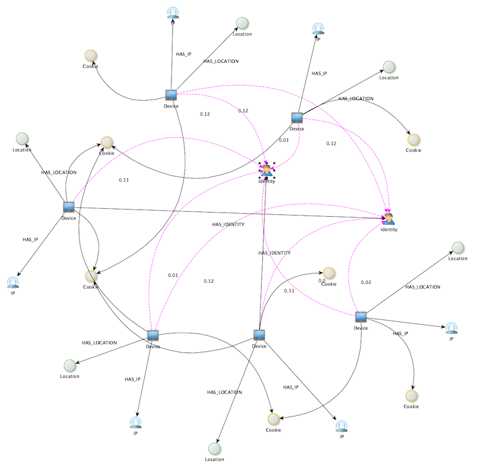

Usage
Import the package entity_resolution in a Python session (or Jupyter notebook):
from entity_resolution import *
There are plenty of methods in this package to deal with predictions but they have been combined in the solution module to simple and direct methods which can interact with raw/gzip directories, JSON entities directories and Neo4j.
Below we highlight the most relevant high-level methods. The idea is that for each type of data (raw, JSON, Neo4j) you can create synthetic graphs, make predictions and save predictions. There are also methods to interact with S3 and it should allow various integrations with ease.
Demo
If you simply run
demo()
This method performs the following:
it creates a synthetic dataset/graph
infers identities on it
saves the predictions to csv
save the graph with predictions to a GraphML file
opens the default app to present the graph with inferred identities.
The output will be something like the following:
Analyzing 102 component(s). The largest contains 37 nodes.
100%|██████████| 102/102 [00:00<00:00, 6159.48it/s]
Predictions 37
Timing 0:00:00
GraphML diagram at /Users/swa/synthetic.graphml
Predictions saved to /Users/swa/predictions.csv
Nodes: 754 Edges: 707 Identities: 50 Inferred: 37
Out[3]:
(<networkx.classes.digraph.DiGraph at 0x7ff6a1c53460>,
Device ... Probability
0 b41c4f85-1921-4327-aae9-f081297c036f ... 0.38
30 a8d88ba8-e54c-456b-9576-42b32d76f711 ... 0.38
29 74337bb0-cc95-4cf6-82fe-67de8566ad62 ... 0.29
35 7fc8c551-de4a-4d7d-baec-333d52ef6d4e ... 0.25
33 ed908a2b-544b-403a-9ce6-1406e536d18a ... 0.25
1 48e9249e-8aeb-405e-be80-6078be5a5874 ... 0.22
31 6e6e3614-1758-49dc-a8ef-75499f22f6d8 ... 0.22
If you have, for instance, yEd installed the rendered diagram will look something like this:
Neo4j
The package can connect directly to Neo4j and add inferred identity like so
add_predictions_to_neo()
If you prefer to fetch the inferred edges rather than adding them to the database you can use:
neo_to_predictions()
which will return a data frame and also save things to a CSV file.
These methods have plenty of parameters, see the documented methods for more
There is also a utility method which creates a synthetic graph in Neo4j:
create_synthetic_neo("mydb")
where mydb is the name of a database. If it doesn’t exit it will be created for you. There is also an extra parameter which allows to truncate the database before adding the graph.
Raw
The raw format refers to TSV lines concatened in gzip files in a directory. The package contains, just like the Neo4j connection above, various method to read/write from/to the raw format.
For example,
raw_to_predictions("the_dir_with_gzip_files")
will directly create predictions from the gzip files and output the result to a CSV file.
To test things out, there is a utility method which will create raw gzip files for you
create_synthetic_raw("a_directory")
Here again, there are plenty of parameter which allows you to tune the method.
JSON Entities
The JSON entities format refers to entity blocks containing Device, IP, Location, Identity and Cookie keys. These entities are saved on disk as concatented lines of JSON as txt-files.
For example,
create_synthetic_entities_json("the_target_dir")
will directly create such entities in the specified directory. This directory can, in return, be used to generate predictions with
entities_json_to_predictions("the_target_dir")
This will output (much like the raw and Neo4j methods) a CSV file with predictions.